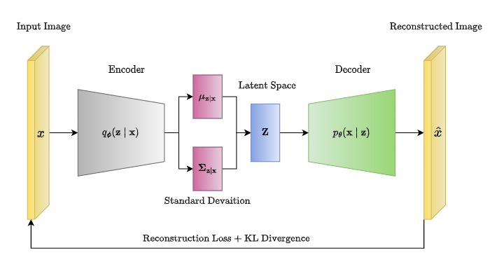
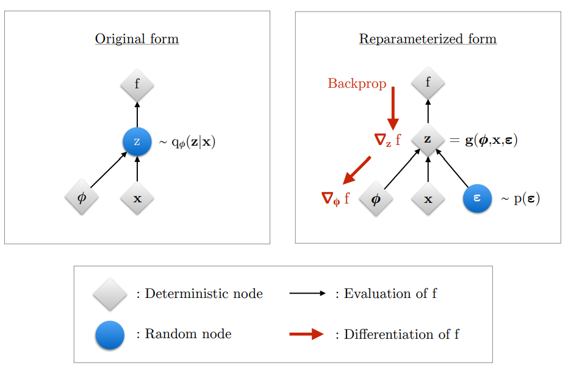
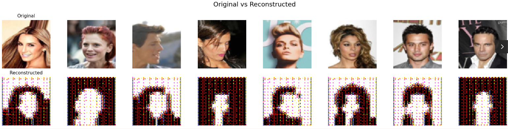
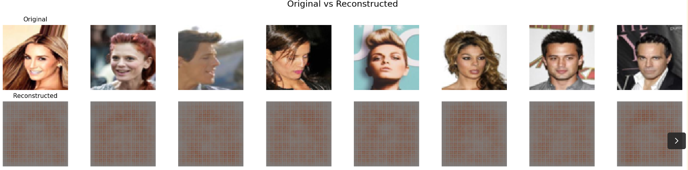
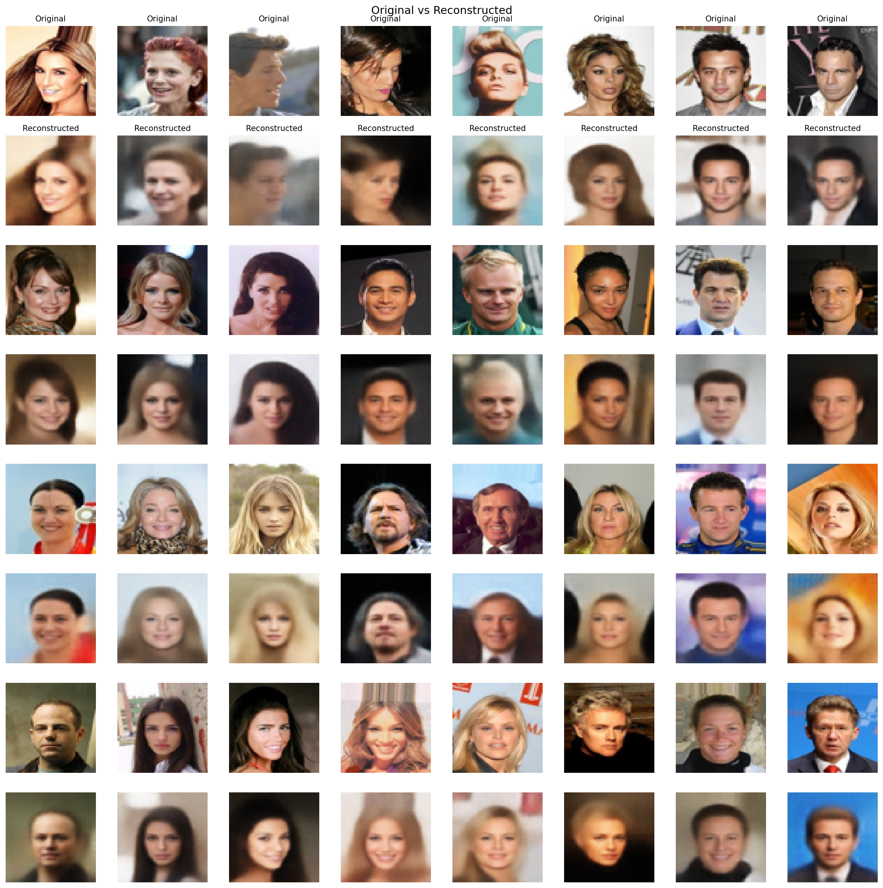
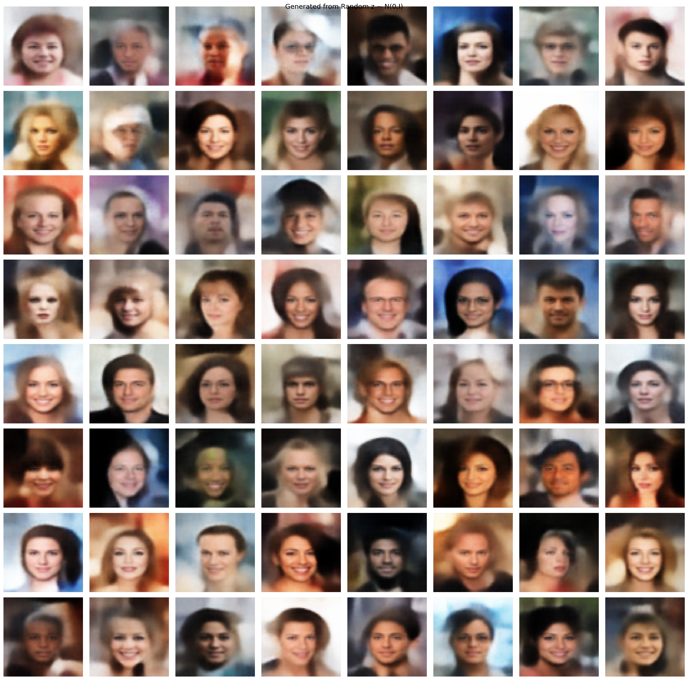
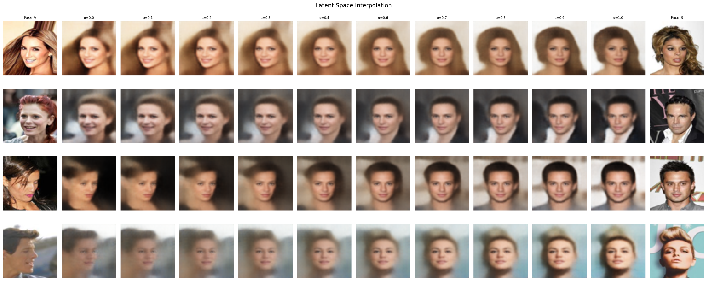
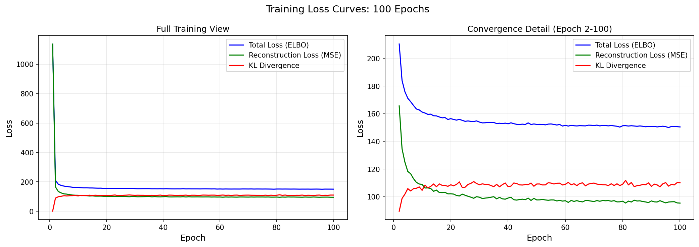

From Kingma & Welling's paper to generating faces, every gradient computed by hand
A Variational Autoencoder learns to compress data into a structured latent space and use that space to generate new data. That is the whole idea. Everything else in this blog is about how and why that works.
VAEs take the useful parts of data, kind of like downsampling or regularizing it in a way that the compressed version can be used to generate new data while preserving the meaningful parts. So basically, what I am trying to say is that the VAE compresses data into a latent space and then that latent space is used to make new meaningful predictions.
VAEs are generative models at their core, but they can also be applied to discriminative tasks. A discriminative model is one trained to learn the true labels, i.e if an image is a cat or if a rose flower is actually the rose label class. A generative model has the aim of generating new data.
The generative side of VAEs tends to make stronger assumptions on data, it is often wrong to an extent. Generative models are better employed if there are few labels and many unlabelled data, this is a form of semi-supervised learning.
Training the generative model is like an auxiliary task. An auxiliary task in ML is a task that focuses on the secondary objectives rather than the primary task, this improves performance. In this case the auxiliary task is to focus and improve on the generative part of the variational auto-encoder.
The auxiliary task gives a way to understand the data at an abstract level, hence making the model generalise to making target (downstream) predictions.
A variational auto-encoder is a model made up of the Encoder (also called the recognition model) and the Decoder (also called the generative model). The Encoder outputs approximations to the posterior as latent variables to the Decoder. These latent variables are the semantically compressed representation of the data. The Decoder needs these latent variables to reconstruct the original data, and both the encoder and decoder update their weights through backpropagation, which is the foundation of why deep learning is even possible in the first place.
Posterior is your belief about the data after seeing the data.
Prior is your belief about the data before seeing the data.
The Decoder is the one that kind of pushes the Encoder to generate a better meaningful latent space that is capable of representing the true posterior. The decoder takes the latent space and sees if it can generate realistic outputs, if not, it tells the encoder to generate and encode better features into the latent space.

This makes very good sense given the fact that the generative model (decoder) is the exact inverse of the recognition model (encoder) according to Bayes' rule.
We are going deeper, good job if you made it this far into the blog, it is only going to get interesting from here, I promise, hands crossed.
Before VAEs, there was a framework called ordinary Variational Inference (VI). VI is a probabilistic method for approximating intractable posterior distributions, but it had a very big disadvantage: each data point in the dataset had to be optimized separately to get the variational distribution for that point, and this was very inefficient for large datasets. What I mean is, if there are 1 million data points in your dataset, you have to run a separate optimization loop on each point to get the variational distribution for each of them. This was extremely inefficient.
VAEs solve this by making the Encoder (recognition model) a stochastic function of the input variables. This means the encoder would generate different latent variables for different data points, it might even generate slightly different latent variables for the same point each time. This is known as "amortized inference". The encoder uses one set of parameters to generate the latent variables for all inputs, but in normal VIs each datapoint had its own separate set of parameters.
But there is one big issue. Since the network is stochastic (random), a variable z has to be sampled from the latent distribution to test the decoder. But moving in this direction would crash our training when we try to backpropagate. Backpropagation will not work on a sampled variable, z is a sample from a random distribution, it is not a function. Backpropagation needs a function to apply the chain rule; it does not work here.
So, what do we do?
We use something called the Reparameterization Trick. It helps us generate z as a function of the latent variables (mu and sigma) that can be backpropagated through, by introducing external randomness ε. We sample ε from a standard normal distribution N(0, I), then compute:
This way gradients can flow deterministically through mu and sigma while ignoring ε. This is the most interesting thing about the variational auto-encoder, I will be breaking it down with my code implementation too in the next section.

Did I forget to say, VAEs were inspired by the Helmholtz machine. It was the first model that used a recognition model; however, it was very inefficient because it uses a sleep/wake algorithm. During the sleep phase, weights are updated to generate new data. During the wake phase, weights are updated to recognise hidden causes. These were two separate objectives that were not coherent with each other. But VAEs maximize a single objective known as the ELBO loss to update all weights simultaneously.
1. Amortized inference: one encoder for all data points instead of separate optimization per point
2. Reparameterization trick: allows backpropagation through stochastic sampling
3. ELBO loss: one single unified objective instead of two separate ones
Can you now see how everything is making sense? Let us go on then!!
Intractable in ML simply means something that is not tractable to compute exactly. It can be incomputable if it requires an integral with no closed form solution.
We want to know $p_\theta(x)$, which is the probability of how our data is structured under our model's parameters θ. It helps us to understand the underlying structure of our data without relying on target labels, this is known as unconditional modelling or more popularly unsupervised learning.
But there is an issue when computing this probability. For every x, we need to add up the probabilities of all the z's that could generate that x. But z is continuous, so the number of possible z values is infinite. This makes $p_\theta(x)$ intractable. Since it is intractable, we cannot compute the gradient of it directly, which means we cannot update our parameters, which means we cannot train our model.
But there is another big issue. The intractability of $p_\theta(x)$ leads to a bigger problem. We need to compute $p_\theta(z|x)$, which is the true posterior. The true posterior answers the question: given an input x, which z generated it?
But we need $p_\theta(x)$ to compute it since they are related through Bayes' rule. So if $p(x)$ is intractable, this makes the true posterior $p_\theta(z|x)$ also intractable and vice versa. We need both of these to train our VAE, so what is the workaround?
Remember I said $p_\theta(x, z)$ is tractable (computable). Let me break this down: $p_\theta(z)$ is the prior distribution over z, it is what we assume z looks like before seeing any data, we just set it to a simple Gaussian N(0, I). And $p_\theta(x|z)$ is the decoder, given a latent variable z, what data x does it produce? Both of these are simple to compute. The problem was never the joint $p_\theta(x, z)$, the problem is the integral over all possible z values to get $p_\theta(x)$.
So now back to the workaround. We need to find approximate estimates of $p_\theta(x)$ and $p_\theta(z|x)$ so we can actually train the VAE model. VAEs improved on traditional VI by parameterizing the approximate posterior with a neural network, this is what makes amortized inference possible. The Helmholtz machine for example used more expensive and less optimized methods like the wake-sleep algorithm.
The ELBO solves this problem. It gives us a computable lower bound on $p_\theta(x)$ that we can actually maximize with backpropagation, and in doing so it also pushes our approximate posterior $q_\phi(z|x)$ closer to the true posterior $p_\theta(z|x)$. I will go into detail on exactly how it does this in the next section.
The first step in making our VAE fully tractable (computable) is to introduce a parametric inference model called the Encoder which is given as $q_\phi(z|x)$ (approximate posterior). This helps us approximate our true posterior. The encoder can be used to generate the stochastic latent variable z.
φ represents the parameters of the encoder (weights and biases).
Now, the big question, what does the ELBO do?
ELBO breaks the problem into two things we can actually compute. How good is the reconstruction, and how organised is the latent space. Reconstruction quality + latent space regularisation. That is the ELBO. Now let me show you where it comes from.
ELBO is an abbreviation for what we know as the Evidence Lower Bound.
I will be proving and deriving the ELBO step by step, do not worry it is very easy to understand. We need to assume a few things before proving the ELBO. We need to assume that we have an approximate posterior called the inference model (encoder) and it is denoted by $q_\phi(z|x)$. We also need to assume a prior distribution $p(z)$, this is what we assume as the distribution of the latent space even before the encoder sees any data, which is why it is called a prior.
During training the ELBO makes sure the latent space is organised and centered around N(0, I). Since our encoder assumed this as a prior, the encoder's output is pushed towards this prior by the ELBO. The component of the ELBO that pushes the encoder towards the prior is known as the Kullback Leibler divergence loss. This prior, this KL loss, and this encoder assumption is what makes our VAE capable of generating new samples. The encoder's output is pushed to be centered around the prior N(0, I), this means our latent space is centered around zero, so we can actually sample new random z values and pass them through the decoder to generate new faces. This is why the VAE is a generative model.
We also need to assume we have a Decoder $p_\theta(x|z)$ that takes the sampled z and reconstructs the input. The Reconstruction Loss component of the ELBO is responsible for pushing the decoder to reconstruct the input better. The RL loss gradient flows back through the decoder and also back through z to the encoder, so it updates both. The KL loss only updates the encoder since it goes directly to μ and log var without touching the decoder at all.
KL loss: organises the latent space to be centered around N(0, I), it only updates the encoder
RL loss: tells the encoder to encode better latent representations and the decoder to reconstruct the input better, it updates both the encoder and the decoder
I will go into the implementation of this in section 2 and how it maps to the formulas/derivation.
Since we have everything required, we can now derive the ELBO:
The first step is to take the $\log(p_\theta(x))$ and write it as an expectation over our encoder's $q_\phi(z|x)$. Since $p_\theta(x)$ does not depend on z, averaging over z does not change it.
From Bayes' theorem, remember that $p_\theta(z|x) = \frac{p_\theta(x,z)}{p_\theta(x)}$. So we can rewrite $p_\theta(x)$ as $\frac{p_\theta(x,z)}{p_\theta(z|x)}$.
Which then becomes:
The next thing we do is multiply the top and bottom of the fraction inside the log by $q_\phi(z|x)$. This does not change our equation since q/q = 1.
The next step is to split the expectation over $q_\phi(z|x)$ into two parts. The first part is known as the ELBO. The second part on the right is the KL divergence between our encoder $q_\phi(z|x)$ and the true posterior $p_\theta(z|x)$. This KL is intractable because it contains the true posterior which we cannot compute.
This KL divergence is always non negative. It is only zero if the approximate posterior $q_\phi(z|x)$ is equal to the true posterior $p_\theta(z|x)$.
Rearranging the ELBO equation using the rule $\log(a/b) = \log a - \log b$, we get the ELBO in its computable form. It is fully computable because $\log p(x,z)$ is tractable and $\log q(z|x)$ is our encoder which is also tractable unlike the KL in (2.8) that is intractable since $p_\theta(z|x)$ is intractable.
Rearranging the equation from (2.8), ELBO was moved to the left hand side and $\log(p_\theta(x))$ was moved to the RHS, we have:
Since $D_{KL} \geq 0$, subtracting it means that the ELBO is always less than or equal to $\log(p_\theta(x))$. This is why it is called the ELBO, the Evidence Lower Bound. We cannot compute $\log(p_\theta(x))$ directly since it is intractable, but if we maximize the ELBO, then we also push $\log(p_\theta(x))$ up.
Now the final step, we expand the ELBO into the two losses we can actually implement (are computable/tractable). We expand $p_\theta(x,z)$ using equation (1.14):
Using the rule $\log(ab) = \log a + \log b$, it becomes:
We can regroup this into two separate terms:
The first term $\mathbb{E}_{q_\phi(z|x)}[\log p_\theta(x|z)]$ is the Reconstruction Loss. It measures how well the decoder $p_\theta(x|z)$ reconstructs x from z. In my implementation I used Mean Squared Error (MSE) for this.
The second term has $\log p_\theta(z) - \log q_\phi(z|x)$. Using the log rule this becomes a single fraction. And since the fraction is flipped compared to the KL definition, we get a negative sign. So the second term equals $-D_{KL}(q_\phi(z|x) \| p_\theta(z))$.
This is a DIFFERENT KL from the one in equation (2.8). The KL in (2.8) was between the encoder $q_\phi(z|x)$ and the true posterior $p_\theta(z|x)$ which is intractable. This KL is between the encoder $q_\phi(z|x)$ and the PRIOR $p_\theta(z) = \mathcal{N}(0, I)$. Since both are Gaussians, this has a closed form solution.
So the final ELBO is:
And since I used β = 0.5 (Beta VAE from Higgins et al. 2017), my actual loss becomes:
This β controls the tradeoff. Lower β prioritises reconstruction quality. Higher β prioritises a more organised latent space but blurrier reconstructions. I chose 0.5 to get better reconstruction quality for my CelebA face generation.
I already defined what an encoder is, but to recap: an Encoder in a variational auto encoder is what takes the input features and compresses them into a more meaningful or semantic representation of the input. These semantic representations learn to remove noise from the input and focus on capturing the core features of that input. My encoder architecture consists of 3 stacked convolutional layers with ReLU activations that consistently downsample the image (64→32→16→8). I am pretty sure everyone knows what a convolutional layer is but for people who do not know, a conv layer takes inputs and extracts meaningful features from them like edges, eyes, nose while preserving the spatial structure of the image. It is usually in 3D form, unlike normal neural networks that flatten the image into 1D and lose all its spatial structure. The output of the last convolutional layer is then flattened and passed into two dense layers to form μ and log σ² (log σ² is used to compute σ in the reparameterization step).
The implementation of the Convolutional layer I wrote from scratch. Every forward pass uses jax.lax.conv_general_dilated for GPU-accelerated computation. You can check the full implementation on GitHub.
class Convolutional:
def __init__(self, input_shape, adam, kernel_size, depth, padding=1, stride=2, seed=0):
input_depth, input_height, input_width = input_shape
self.depth = depth
self.padding = padding
self.stride = stride
# H_out = floor((H + 2P - F) / S) + 1
self.output_height = int(jnp.floor((input_height + 2 * self.padding - kernel_size) / self.stride) + 1)
self.output_width = int(jnp.floor((input_width + 2 * self.padding - kernel_size) / self.stride) + 1)
# Xavier/Glorot Initialization
fan_in = input_depth * kernel_size * kernel_size
fan_out = depth * kernel_size * kernel_size
std = jnp.sqrt(2.0 / (fan_in + fan_out))
key = jax.random.PRNGKey(seed)
wkey, bkey = jax.random.split(key)
self.weights = jax.random.normal(wkey, (depth, input_depth, kernel_size, kernel_size)) * std
self.biases = jnp.zeros((depth, self.output_height, self.output_width))
def forward(self, input):
self.input = input
output = jax.lax.conv_general_dilated(
self.input, self.weights,
window_strides=(self.stride, self.stride),
padding=[(self.padding, self.padding), (self.padding, self.padding)],
dimension_numbers=('NCHW', 'OIHW', 'NCHW')
)
output = output + self.biases[None, :, :, :]
return outputThis is the bridge between the Encoder and Decoder. I have explained this before but a fast recap: the encoder outputs μ and log σ², but we need an actual sample z to pass to the decoder. Sampling directly from $\mathcal{N}(\mu, \sigma^2)$ would break backpropagation, so we use the Reparameterization Trick.
class Reparameterize:
def forward(self, key, mu, log_var):
self.mu = mu
self.log_var = log_var
self.sigma = jnp.exp(0.5 * self.log_var)
self.epsilon = jax.random.normal(key, self.sigma.shape)
return self.mu + self.sigma * self.epsilon # z
def backward(self, output_gradient):
total_mu_gradient = output_gradient # dL/dz * dz/dmu
total_log_var_gradient = output_gradient * 0.5 * self.sigma * self.epsilon # dL/dz * dz/dlog_var
return total_mu_gradient, total_log_var_gradientThree lines of code. That is the entire reparameterization trick. ε is sampled from N(0, I) using jax.random.normal, then z is computed deterministically as μ + σ × ε. Gradients flow through μ and σ back to the encoder because z is a function of them. The randomness in ε has no parameters, it is a constant, it cannot be backpropagated through so it does not block the gradient path.
The Decoder takes the latent random variable z and reconstructs a 64×64 RGB image. It first passes z through a dense layer to expand it to shape (128, 8, 8). This is done because the current z is only 128 values, it does not have enough features to form the 3D input that the first transposed conv layer expects. The z is then reshaped and passed through 3 transposed convolutional layers that upsample: 8→16→32→64. Each transposed conv layer is followed by ReLU except the last layer which uses a sigmoid activation to output pixel values between 0 and 1.
The TransposedConv2D was the hardest layer to implement from scratch. The forward pass flips the weights spatially and transposes the channel dimensions before doing a dilated convolution. The backward pass uses a regular convolution for the input gradient and a cross correlation with gradient un-flipping for the kernel gradient.
class TransposedConv2D:
def __init__(self, input_shape, depth, adam, kernel_size=4, padding=1, stride=2, seed=1):
input_depth, input_height, input_width = input_shape
# Transposed Conv Output Size
self.output_height = (input_height - 1) * stride - 2 * padding + kernel_size
self.output_width = (input_width - 1) * stride - 2 * padding + kernel_size
# Xavier/Glorot Initialization
fan_in = input_depth * kernel_size * kernel_size
fan_out = depth * kernel_size * kernel_size
std = jnp.sqrt(2.0 / (fan_in + fan_out))
key = jax.random.PRNGKey(seed)
wkey, bkey = jax.random.split(key)
self.weights = jax.random.normal(wkey, (input_depth, depth, kernel_size, kernel_size)) * std
self.biases = jnp.zeros((depth, self.output_height, self.output_width))
def forward(self, input):
self.input = input
pad = self.kernel_size - 1 - self.padding
# Flip weights spatially and transpose channels
w_flipped = jnp.flip(self.weights, axis=(2, 3))
w_forward = jnp.transpose(w_flipped, (1, 0, 2, 3))
output = jax.lax.conv_general_dilated(
self.input, w_forward,
window_strides=(1, 1),
padding=[(pad, pad), (pad, pad)],
lhs_dilation=(self.stride, self.stride),
dimension_numbers=('NCHW', 'OIHW', 'NCHW')
)
output = output + self.biases[None, :, :, :]
return outputThe computable ELBO loss has two parts that I implemented separately: the Reconstruction Loss and the KL Divergence loss.
The reconstruction loss measures how well the decoder's output matches the original input. I used Mean Squared Error with sum over spatial dimensions and mean over batch:
class ReconstructionLoss:
def forward(self, y_pred, y_true):
self.y_pred = y_pred
self.y_true = y_true
return jnp.mean(jnp.sum((self.y_true - self.y_pred)**2, axis=(1, 2, 3)))
def backward(self):
return 2 * (self.y_pred - self.y_true) / self.y_true.shape[0]The KL divergence measures how close the encoder's output distribution is to the prior N(0, I). This uses the closed form formula for KL between two Gaussians:
class KullBackLeiblerDivergenceLoss:
def forward(self, mu, log_var):
self.mu = mu
self.log_var = jnp.clip(log_var, -10, 10)
return -0.5 * jnp.mean(jnp.sum(1 + self.log_var - self.mu**2 - jnp.exp(self.log_var), axis=1))
def backward(self):
batch_size = self.mu.shape[0]
return self.mu / batch_size, 0.5 * (jnp.exp(self.log_var) - 1) / batch_sizeThe total loss combines them with β = 0.5:
Getting the balance between these two losses and stabilising them was one of the hardest parts of this project. I will talk about that in the next section.
I started with naive Stochastic Gradient Descent (SGD) but the training was too unstable, the KL loss kept exploding and vanishing. I could not find good hyperparameters for it. So I read the Adam paper by Kingma and Ba (2015) and implemented AdamW from scratch.
But even Adam was not enough. Over 100 epochs of training, the weights grew and this caused the activations to explode through the decoder layers. So I added decoupled weight decay, which makes it AdamW. One line of code made the difference:
class AdamW:
def __init__(self):
self.alpha = 0.001
self.B1 = 0.9
self.B2 = 0.999
self.epsilon = 1e-8
self.m = {}
self.v = {}
self.t = 0
def update(self, name, weight, gradient):
if name not in self.m:
self.m[name] = jnp.zeros_like(weight)
self.v[name] = jnp.zeros_like(weight)
# Weight decay. this one line prevents activation explosion
weight = weight * (1.0 - self.alpha * 0.01)
self.m[name] = self.B1 * self.m[name] + (1 - self.B1) * gradient
self.v[name] = self.B2 * self.v[name] + (1 - self.B2) * gradient**2
m_hat = self.m[name] / (1 - self.B1**self.t)
v_hat = self.v[name] / (1 - self.B2**self.t)
return weight - self.alpha * m_hat / (jnp.sqrt(v_hat) + self.epsilon)
def step(self):
self.t += 1weight = weight * (1.0 - self.alpha * 0.01)
This shrinks the weights slightly every step, preventing them from growing unbounded. The rest of the optimizer is standard Adam: first moment estimate, second moment estimate, bias correction.
The model.py connects everything into one pipeline. The forward pass goes: Encoder → Reparameterize → Decoder → compute loss. The backward pass goes in reverse: loss gradients → decoder → reparameterize → encoder. Both the encoder and decoder weights are updated simultaneously through backpropagation.
class CONVAE:
def __init__(self, input, input_shape, kernel_size, encoder_filters, decoder_filters, latent_dim):
self.adam = Adam()
self.encoder = Encoder(encoder_filters, input, kernel_size, latent_dim, self.adam)
self.decoder = Decoder(input_shape, decoder_filters, latent_dim, self.adam)
self.reparameterize = Reparameterize()
self.elbo = ELBO()
def forward(self, input, key, kl_weight):
self.input = input
self.mu, self.log_var = self.encoder.forward(self.input)
self.z = self.reparameterize.forward(key, self.mu, self.log_var)
self.reconstructed_image = self.decoder.forward(self.z)
self.loss = self.elbo.forward(self.input, self.reconstructed_image, self.mu, self.log_var, kl_weight)
return self.loss, self.elbo.rl_loss, self.elbo.kl_loss
def backward(self, learning_rate):
self.RL_gradient, self.mu_gradient, self.log_var_gradient = self.elbo.backward()
self.z_input_gradient = self.decoder.backward(self.RL_gradient, learning_rate)
self.total_mu_gradient, self.total_log_var_gradient = self.reparameterize.backward(self.z_input_gradient)
self.total_mu_gradient = self.mu_gradient + self.total_mu_gradient
self.total_log_var_gradient = self.log_var_gradient + self.total_log_var_gradient
self.input_gradient = self.encoder.backward(
self.total_mu_gradient, self.total_log_var_gradient, learning_rate
)This is Algorithm 1 from the Kingma and Welling paper. Sample a minibatch, sample noise, compute the ELBO, take gradients, update parameters. Repeat until convergence.
Now this is the part where I talk about everything that went wrong and how I fixed it. Building a VAE from scratch sounds cool but it is by no means a small feat, until you are staring at red and black faces at 3am and crashing out wondering what is going on with my training. And you think what am I getting wrong? I was able to scale through and here were my errors and how I fixed them.
This was the root cause of most of my early training failures. My Reconstruction Loss was dividing by way too many elements, so the gradients coming out of it were insanely tiny. Meanwhile the KL gradients went directly to μ and log_var at full strength without passing through any layers. KL was crushing the reconstruction and my decoder was not learning at all.
Reconstruction gradients were divided across all pixels (3 × 64 × 64 = 12,288 elements), making them microscopic. KL gradients only divide across the batch, making them comparatively massive. KL dominated everything.
The fix was to change how I averaged the losses. Instead of averaging over every single pixel, I used sum over the spatial dimensions and mean over the batch only. This made the reconstruction as strong as the KL loss. After that, both losses could actually push the model in the right direction without one completely overpowering the other, meaning we can make our VAE good at reconstruction (discriminative) of inputs and also generation of new data.
Early in training the KL loss would just collapse to zero within the first few batches. The Encoder learned to completely ignore the input and just output the prior N(0, I) for everything. Every image got the same μ and σ regardless of what face it was looking at. The decoder had nothing useful to work with so reconstruction also got worse.
This happened because the KL loss was too easy to minimise. The encoder found that the fastest way to reduce the total loss was to just match the prior perfectly. This seems like an advantage but it is actually not. If KL = 0, the encoder will not encode meaningful features in the latent space and then this makes the decoder unable to predict the correct reconstructions.
I tried KL annealing where you start with kl_weight = 0 and slowly ramp it up. KL annealing allows the model to focus on reconstruction first and then the KL loss picks up after some epochs. But what actually worked for me was using a fixed β = 0.5. This gave the reconstruction loss time to get stabilised before KL could dominate. The encoder had to actually encode useful features into the latent space because reconstruction was weighted more heavily. Once I settled on β = 0.5 the collapse stopped and both losses stabilised.
Two problems were happening at the same time. First, all my layers were initialised with the same random seed, so every layer started with identical weights. Combined with ReLU, the red channel dominated and green and blue died. Channel stats showed R=0.69, G=0.01, B=0.003.
Second, even the red channel was not producing real colors. The weights had grown way beyond their initial values over training, and the activations were exploding through each decoder layer. By the time values reached Sigmoid they were in the millions, so sigmoid just snapped everything to 0 or 1. There were no real skin tones, just binary red and black.

Both problems got fixed together in one retraining run. Unique seeds per layer so all three channels get proper gradients from the start of training. And weight decay in the Adam optimizer to keep the weights bounded so activations cannot explode. After retraining, channel stats became R=0.56, G=0.49, B=0.44 and sigmoid could finally output a range of real values bounded between 0 and 1.

My early reconstructions had a visible grid pattern on top of the faces. The face shapes were there but it looked like someone put a mesh over the image.
This is a known problem with TransposedConv2D. When you use kernel_size=3 with stride=2, the kernel does not divide evenly by the stride. Some pixels get painted more than others creating an alternating bright and dark pattern across the whole image.
The fix was switching to kernel_size=4 with stride=2 and padding=1. Even kernel size divides evenly by the stride so every pixel gets equal treatment. But this required rewriting the entire TransposedConv2D backward pass because the gradient math changes completely with different kernel sizes. The final formulation flips the weights in the forward pass and also un-flips the gradients in the backward pass.
After 100 epochs on 200,000 CelebA faces, trained on an NVIDIA Tesla P100 GPU, here is what the model produces.

Top row is the original, bottom row is what the model reconstructs after compressing it down to just 128 numbers and back. Hair color, skin tone, face shape, background are all preserved. The model is learning meaningful structure, not just memorising pixels.
You will notice the reconstructions are slightly blurry. This is expected with MSE loss. MSE minimises pixel distance, which means when the model is uncertain about a detail it averages over the possibilities instead of committing to one. The result is soft edges. A perceptual loss would fix this but I kept MSE to stay faithful to the original paper.

These faces do not exist in the training set. I sampled random vectors from a standard Gaussian z $z \sim \mathcal{N}(0, I)$ and passed them through the decoder. The fact that these look like plausible human faces means the latent space is well-structured. Random points in that space map to realistic outputs, not noise.

This is the part that convinced me the model actually works. I took two real faces, grabbed their latent vectors, and linearly interpolated between them. The transition is smooth. Skin tone shifts gradually, hair changes continuously, no sudden jumps or artifacts. That smoothness means the latent space is continuous and meaningful, which is exactly what the paper promises.

Both reconstruction loss and KL divergence converged cleanly. No collapse, no explosion, no oscillation. After everything I went through in Part 3 to get here, seeing these curves flatten out smoothly was satisfying.
These metrics are from a 3-layer ConvVAE with fully manual backpropagation, no batch norm, no perceptual loss, and no pretrained components.
Evaluated on 1,000 hold-out CelebA images:
| Metric | Value |
|---|---|
| SSIM | 0.9364 |
| PSNR | 22.49 dB |
| Final Reconstruction Loss | 95.38 |
| Final KL Divergence | 110.14 |
| Channel Balance (R / G / B) | 0.56 / 0.49 / 0.44 |
The SSIM above 0.93 means the reconstructions are structurally very close to the originals. The channel balance sitting near 0.5 for all three channels confirms the channel collapse from Part 3 is fully resolved. The metrics are pretty solid for a from scratch model, the changes/improvements in the next section would push them even further.
This model works, but it is not state of the art. A few things that would push it further.
Batch Normalization I did not implement batch norm from scratch because I would have had to rewrite my entire backward pass to accommodate it. But adding it would stabilise training and let me use higher learning rates.
Perceptual Loss MSE treats every pixel equally, which is why VAE outputs tend to look blurry. MSE averages over uncertainty instead of committing to sharp details. A perceptual loss using features from a pretrained network would push the model to preserve high-level structure like edges and textures instead of just minimising pixel distance.
Deeper Architecture Three conv layers is minimal. More layers with residual connections would let the encoder capture finer details before compressing to 128 dimensions.
Larger Latent Dimension 128 works, but experimenting with 256 or 512 might capture more variation in the data, especially for diverse attributes like accessories, expressions, and lighting.
Welldone if you made it this far. We just built a convolutional beta variational autoencoder from total scratch without any hidden abstractions. We went into the theory of the ELBO, the derivations, the intuitions, we stripped the whole paper down. I hope this was worth a read.
This VAE architecture and the pure JAX engine I built for it is being adapted for anomaly detection on CERN high energy physics collision data. The idea is to train the VAE on normal collision events, learn what normal looks like in the latent space, and then flag any event that the model cannot reconstruct well as a potential anomaly. Same foundation, different data, real scientific application.
I also plan to build a Vision Transformer next in JAX with Flax. Self-attention, multi-head attention, patch embeddings. The ConvVAE proved I understand what happens under the abstractions. Now I can use them.
I will be doing more blogs like this for anything I implement. See you in the next one!